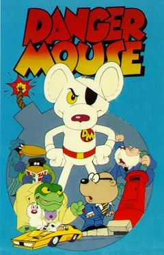

This is the (long) story of how inamo became arguably the world’s first two-mouse Flash installation. If you enjoy the geeky details of programming projects, this is for you.
Sometimes a single sentence in a specification can balloon into a task as daunting as most of the other sentences put together. This is the story of one such sentence.
18 months ago I started building the software and hardware system for an interactive restaurant called inamo. Inamo is not the first restaurant to let customers order food and drink through a computer interface at the table, but in our esteemed and unbiased opinion it is the first restaurant to do so in an elegant manner that adds to the dining experience rather than plonking an ugly great touch screen between you and your date.
{kind=link}
Buried in the requirements document that the finances had produced was an innocuous little sentence that hardly gave me pause on the first reading:
“Each table seats two people, who can interact with the system simultaneously”
You see, computers only have one mouse pointer. Even if you plug two mice into a PC, Windows will prevent them showing up as two devices and instead merge their input streams so that they both appear to applications as a single virtual device.
Bugger.
Writing mouse applications for modern operating systems is easy because the mouse stack takes care of all the heavy lifting for you. The mouse stack has two main components: device drivers read the arcane binary data format from the mouse hardware and convert it into a useful stream of coordinates for your application, then standard libraries take care of collision detection, i.e. deciding when the mouse has moved over a link or clicked a button. Since the Windows/Flash mouse stack assumes a single pointer, the only option was a ground-up reimplementation of a mouse stack that takes data from our Bluetooth trackpads, converts it into a coordinate stream, feeds it into Flash and performs collision detection.
Part 1: re-implementing the Flash MouseEvent system
The trick to getting a two pointer system working is to draw the pointers as part of the flash animation, which has the added benefit that that you can control their appearance. In fact, hiding the system pointer and replacing it with a Flash object is an old Flash designer’s trick for making fancy mouse pointers.
Ideally, an application for multiple mice should look exactly like programming for a single mouse. Firstly, framework developers shouldn’t pass unnecessary complexity onto the application developers – the framework should handle as much heavy lifting as possible. Secondly, the inamo system accepts plugins from 3rd party developers; these plugins are plain old SWF files, and we didn’t want them to have to be written with our system in mind.
If you’ve programmed interactive applications in ActionScript 3.0 before, you’ll know that interacting with the mouse looks something like this:
// sample 1: make shizzle clickable var shizzle:Shizzle = new Shizzle(); shizzle.addEventListener(MouseEvent.CLICK, function(e:MouseEvent):void { trace("Ooh, that tickles!"); }); |
Individual display objects are registered to receive mouse events. The Flash player tracks the position of the mouse pointer, and dispatches MOUSE_OVER and MOUSE_OUT events to registered objects as the mouse passes over them, and CLICK events if they are clicked. This simple demo uses over and out events to emphasise a box when the mouse is over it, as well as the technique of dawing a custom pointer in Flash.
* finding the highest display object is quite fun. It’s simple in the case of two display objects with the same parent: the higher object is the one with the greater childIndex property. However, if two objects don’t share the same parent, you have to trace up the display object tree to find the common ancestor. In computer science terms, this means finding which node comes second in a depth-first traversal of a n-way tree.
A naïve implementation of this was quite easy. I built a MouseManager that tracks all display objects currently in the system. Each frame, the MouseManager locates the “over object”, which is the display object under the mouse pointer, or the highest one* if there are multiple such objects. If this object is different from the previous frame’s over object, you dispatch a MOUSE_OUT event on the previous one and a MOUSE_OVER event on the new one.
Unfortunately, the naïve implementation didn’t work properly when two mouse pointers are used. Programs are typically written to rely on the fact that once you receive a MOUSE_OVER event, you will get a MOUSE_OUT before the next MOUSE_OVER. Here is the code for the above demo, which makes precisely that assumption:
// sample 2: emphasise the box that the mouse is over var buttons:Array = [button1, button2, button3, button4]; // this variable is set to the box that the pointer is over, i.e. there // is the implicit assumption that there is only one mouse pointer var currentOver:Button; for each (var button:Button in buttons) { button.addEventListener(MouseEvent.MOUSE_OVER, handleMouseOver); button.addEventListener(MouseEvent.MOUSE_OUT, handleMouseOut); button.alpha = 0.5; } function handleMouseOver(e:MouseEvent):void { currentOver = e.target as Button; currentOver.alpha = 1; } function handleMouseOut(e:MouseEvent):void { currentOver.alpha = 0.5; currentOver = null; } |
This code is not broken – it always works as long as there is only one mouse, and plugins loaded into our system were not necessarily written for multiple mice. The problem comes when you have two mice, and the second mouse could move over a button while the first mouse is still over another. In this demo, since your computer only has one mouse, I’ve set up draggable arrows to represent the two mice:
(fun puzzle: try and make all the boxes dark by dragging the two mouse pointers)
It would be trivial to rewrite the above code in a way that doesn’t break with two mice, but we wanted to be able to run any SWF without modification.
To solve this problem each pointer gets its own MouseManager that is tied to a specific display object container, so that they only keep track of objects inside that container. This way, each loaded plugin only has one mouse that can interact with it, and code written for one mouse can’t get confused:
I distinctly remember the first time I saw the above proof-of-concept: I thought the hard part was over, and sent a triumphant e-mail claiming that the two-mouse system was “all over bar the integration”. Ha! How wrong I was.
Part 2: ActionScript is not the best language for a device driver
Inamo uses trackpads built into the tabletop:
Each trackpad communicates with the client PC via Bluetooth. To prevent Windows merging both trackpads into a single virtual device, we reprogrammed the trackpads to present themselves to Windows as generic COM ports, issuing forth a stream of standard 3-byte movement packets.
At the start of the project, my plan for getting these packets of data into Flash read a bit like this:
- 3-byte data packet arrives over Bluetooth into COM port
- erm, something… I’ll figure it out later
- ActionScript MouseManager interprets 3-byte packet
Imagine my surprise when step 2 turned out to be problematic. Flash is designed from the ground up to run on the Internet. It can’t access any of the client PC’s hardware such as serial ports, and it can’t run programs on the client PC.
Attempt 1: in through the front door
Since the only way you can get data into Flash is over a network, the obvious solution was to build a server that sends mouse data over a network connection. Since on the one hand it needed to be written in a language that supports Windows serial ports, and on the other hand I hate C++ with a passion that most people reserve for child molesters, the best choice for this was C#.
Edited in 2011 to add: I take it all back, C++ is awesome
I built a small C# / Windows Forms app that opened a COM port to the trackpad, interpreted the binary data, converted it to coordinates, encoded it as XML and broadcasted to any clients listening on a TCP socket. Meanwhile in Flash, the MouseManager used ActionScript’s XMLSocket class to connect to the C# app and receive mouse movement data.
Throwing this all together I saw that it worked, and sent out a second triumphant e-mail claiming to have solved the mouse issue.
A brief aside: when my wife and I are watching an episode of House MD on the laptop, there will be several moments where Greg House says something like “Of course! The ampicillin caused the reverse toxinecrosis in the frontal cortex because of the beta-blockers we prescribed for the rabies, but if we replace them with doxycyclin then the bacteria will all die and the patient will be home for lunch!” Is House right, one wonders? At this point we wiggle the mouse so that the DVD player application displays a progress bar. If the progress bar isn’t almost all the way to the right, then an unforeseen (by House, not by us) complication will emerge and the patient will be back in a coma faster then you can say “formulaic”.
Well look at the scroll bar to the right of this page and tell me: did the C# server solve the problem? Did it bollocks.
On my hefty development workstation there was never more than a one frame delay between a data packet arriving at the C# server and it being processed by Flash – moving your finger on the trackpad caused a near-instantaneous movement of the mouse pointer drawn by Flash. When I loaded the software onto the cheap PCs we were using for all the clients in the restaurant, this rose to four frames, causing a painfully obvious lag.
Testing revealed that this delay happened between the C# server sending a TCP packet and the Flash client receiving it, so it was out of our control – the network stack on the cheap PCs just didn’t shuttle data around fast enough.
Goodbye plan A.
Attempt 2: in through the back door, or “have you tried doing it in C++?”
Like I said earlier, Flash only accepts data over the network, but there are products that change this. SWF to EXE compilers such as MDM Zinc take an SWF file and compile it into an Windows program. In doing so they make available a range of enhanced ActionScript classes for dealing with things like printers and, (joy!), COM ports.
A brief reading of the documentation quickly extinguished that joy: rather than allowing multiple instances, the COMPort class of MDM Zinc uses static properties and methods, like so:
// sample 3: "Object-oriented" does not mean "procedural with dots in" COMPort.open(3); COMPort.addEventListener("onCOMPortData", function(result:*):void { trace("data on COM3 port: " + result.data); }); |
In other words, to make it very slightly easier to access COM ports, they’ve made it impossible to access more than one at a time. Thanks.
Fortunately, there is also a DLL class that allows you to instantiate arbitrary DLLs, call functions and return data. Huzzah! I wrote a DLL in C++ that replaced the network connection of the C# server with a Windows named pipe. Named pipes are regions of shared memory that allow two programs to communicate with each other almost instantaneously. Given the amount of time it took debugging the pointer operations in the C++ DLL, and its tendency to make the whole application crash for no apparent reason, I called the DLL DangerMouse and the client ActionScript code Penfold.
I compiled and ran the new system, and noted with delight that the latency had dropped to one frame, as any data packets arriving at the COM port were picked up immediately by the DLL / ActionScript combination. It was surprising therefore that the mouse pointer just as sluggish as before.
The problem was that while the latency had been reduced to one frame, the frame rate had dropped from twenty frames per second to a mere five; the whole system was running at a quarter speed, and was completely unusable. It seems that MDM Zinc has a computational overhead on each frame that was barely noticeable on my workstation, but caused a massive degradation on the cheap client PC.
Not to worry, I am Options Boy, and there are always more options. I tested a competitor to MDM Zinc called Northcode SWF Studio. This works the same way, but has far less overhead on each frame, giving us a more healthy fifteen frames per second. That’s a start, but smooth animation requires twenty.
I turned to profiling and optimising the UI, looking for any redundant computation to remove. After a week of swimming in the last year’s worth of code and unearthing many performance bottlenecks (including, most embarrassingly, the discovery that the slowest bit of code in the application was the performance monitoring subsystem) I emerged successful: twenty frames per second on the client PC, just like it had been on my workstation.
The fact that I had so obviously succeeded made it all the more depressing when I discovered once again that the pointer was still not usable.
The problem this time was then when I ran the UI on the development workstation I had been using a standard mouse for testing. When using a mouse you know how much you need to move the mouse by in order to move the pointer to a target, and if the pointer lags behind a bit it doesn’t matter: you move the mouse by the right amount, and the pointer catches up a fraction of a second later. A trackpad is different because you’re always looking for visual feedback from the pointer, and even the slightest latency causes you to overshoot the target. 20 frames per second was fast enough for a mouse, but not for a trackpad, and there was no way the UI would run any faster. Options Boy was bang out of options.
There is a nonzero probability that calling a badly debugged device driver DangerMouse was the funniest thing I will ever do. Therefore when I discovered that this whole approach had to be abandoned, I think the biggest disappointment was that I had to abandon those lovely component names.
Attempt 3: What Would Windows Do?
By this point I was mildly upset, since the only route out of this predicament that I could see was to recommend buying faster hardware, and when you start multiplying any extra cost by 31 tables, things start getting unpleasant really fast. While I was browsing the web for computers that are fast, small and cheap (it seems you can pick any two) and wondering how best to sell a five-figure increase in the project cost, I asked myself why more applications don’t suffer from this problem.
GUI applications do occasionally lock up for a few tenths of a second as they perform some calculation or wait for an IO operation to complete, but you hardly notice. If you click on a button of an application that is unresponsive, the click event is queued until the application finishes it’s calculation, after which it will respond. You may notice the delay but it’s unlikely to irritate you, because you didn’t have to wait in order to click the button, you only had to wait for the click to be processed. In other words, as long as the pointer doesn’t stop moving, the user feels in control.
Suddenly it made sense why the mouse pointer is always drawn by the operating system and not by GUI applications themselves. The operating system can dedicate a high-priority process just to drawing the pointer, so that even if every application slows down to a crawl, the user can still interact at a normal speed. By drawing the mouse pointer in Flash, I had made sure that any slight dip in frame rate had a direct effect on the responsiveness of the mouse pointer.
What we needed was an application running beside the main UI that could draw the mouse pointers on top of it, and we already had one: the C# mouse server. There is a function in the Windows API called UpdateLayeredWindow that programs like WinAmp use to draw non-rectangular interfaces. I used this (via C#’s p/invoke interface that lets you call functions in native DLLs) to overlay a transparent PNG of the mouse pointer that was, to the user, indistinguishable from the one drawn by Flash. Better still, by setting the process priority of the C# server to above normal, Windows will ensure that no matter how slow the Flash animation runs or how much CPU it is taking up, the C# server will always be able to update the pointer position as soon as a new mouse data packet arrives.
Thoroughly expecting it to not work for some reason, I compiled the project and installed it on the cheap client PC. It worked. I had finished.
Conclusion
So what did I learn from this project? I started my programming career making web animations, and so I approached this problem as an animation issue, when really it was an operating system issue. If I had initially phrased the problem as “what is the fastest way to draw a mouse pointer?” rather than “how do I increase the frame rate of my animation?” then I might have finished the project a month earlier.
But then again, if I’d finished the project a month earlier I wouldn’t have found out what the Windows API means by a null named blocking byte type pipe, so it wasn’t all bad.
Inamo is open now in Soho, London. If working on a system like this sounds fun, they’re always looking for smart ActionScript and Java developers. If you are interested, or know anyone who might be, contact me.
Good article.
Just wondering why you went through all of that trouble instead of implementing the app using an xmlsocket server to collect and broadcast the multiple inputs.
That’s exactly what I ended up doing.
The first version of that approach, the latency was too high because sending data over TCP on a thin client computer takes to long. The mouse pointer movement trailed quite a way behind your finger movement.
The current version still uses XMLSocket, but now the pointer is drawn to the screen by the socket server application, so it doesn’t suffer the TCP delay.
Fantastic work, and lovely story.
Dear Bernie,
What a great program! I would like to know if you would please get in touch with me as my brother is interested in your services. We have a established Pan Asian restaurant in Harrogate.
Thank you and I hope to hear from you soon.
Serena
I am very interested in your program. I own a japanese restaurant myself in Indonesia and would like to know if we can acquire your services here. Thank you.
Why didn’t you just set up separate instances of the application running on separate machines, that were tied together, rather than create one application for every two people?
How do you handle parties of 3 or more, one application and multiple cursors?
Do you have one PC per table?
Good question: why not run one instance of the system for each person?
We currently have one PC per table. Running two instances of the OS with one mouse each would have required either twice the number of computers, or a more powerful computer to virtualise two instances of the OS on one computer. Our solution can scale to any number of users without significant extra processing costs.
Also, the two on one table sharing the same UI can interact qute a bit. They control the “tablecloth” background image for the whole table for example, and play two-player games. Both of these would have been significantly harder if the interaction happened over a network.
Bernie :o)
Dear Bernie
I was looking for this kind of software for one project that I’m working.
Please contact me to talk more about it, I am very interested in your product
Thank you
I am very interested in your program, I´have a restaurant in brazil, and a need too much your help, if possible contact-me by email please
rodrigomfr@hotmail.com
thank´s very alot
Hi Bernie,
Enjoyed your article. It made me laugh out loud (LOL?)
What about Silverlight/WCF? Would they work with USB hardware? Thinking about MS Surface table they must have similar requirements.
Mark
Good question. The MS surface expects programs to be written specifically for it, so they require that programs use their multitouch SDK. Our requirements were that applications that were not written with our hardware in mind would run without modification.
As for the use of SilverLight, that would have made our job much easier since it’s very easy to get a SilverLight application to access serial ports. This would have removed the need for the separate C# server, since the serial port access code could be baked directly into the client. However we preferred Flash for developing the UI for various reasons, not least of which the ease of hiring skilled Flash designers.
Bernie :o)
First of all let me congratulate you on the amazing work you have done. I’m a Graphic Designer & Animator, and I also create small Flash games from time to time.
I went to London in March 2011, and I saw the Inamo restaurant while I was running with my friends to catch the underground train. I didn’t have time to enter the restaurant, but I really adored the whole idea… and here I am now, coincidentally found my way into your blog!
After reading your whole article twice, I had a question in mind: All you had to do is use the “C# mouse server” in order to have 2 mouses functioning at the same on the .SWF file? No more ActionScripting was needed inside the Flash file?
Thanks Jay.
Yes, there was scripting inside the Flash file. But by the time I got to that step, I’d already written the scripting. Functionally the system worked perfectly; I just needed to get the performance working too.
Thank you Bernie for your prompt reply. I know people who uses 2 mouses on the same computer for many purposes. Can’t they as well open an .SWF file and use the 2 mouses at the same time without having to add additional ActionScripts?
Very interesting use of restaurant Tech. Curious about the guest reaction and user experience. Also, has this translated into any ROI for the restaurant? Has a sales increase followed the “buzz”? Is there a way for the guest to opt-out and use a paper menu instead? How has self ordering affected guest satisfaction and the inevitable “I didn’t order this” question?
It actually works very well. Obviously there’s a massive amount of custom coming from first-time visitors wanting to try the hot new thing, but there are a good number of regulars too, so it’s obviously not just a novelty.
It’s been a couple of years since I last went actually (the only downside of moving to Sydney)
On ROI I think there is something in the order of 10% greater profitability (don’t quote me on that, the official figures are available somewhere on http://www.e-table-interactive.com). This comes from a combination of more efficient table usage (customers aren’t hanging around waiting for service as much) and reduced staff expenses. However the big benefit is in the profile of the restaurant. Last time I checked, inamo is packed, 7 days a week, and won Time Out’s “Best Restaurant in London” reader award. And that was the first restaurant opened up by the two founders who were twenty-something when they started the project. What are the odds of two restaurant newbies getting that result on their first attempt in one of the world’s most competitive foodie cities?
And yes, there’s a paper menu, just in case you want to take grandma :o)
HALLO BERNIE.
I am very interested in your program. I own a restaurant myself in GEORGIA and would like to know if we can acquire your services here. Thank you.
Sure! The software is called E-Table, and is available here: http://www.e-table-interactive.com/
what kaind of touch are you using??
We made our own hardware, so we use an off the shelf trackpad component wired to a microcontroller on a custom circuit board.
wow! great work! still, i don´t understando how the trackpad works. does it uses a software or camera?